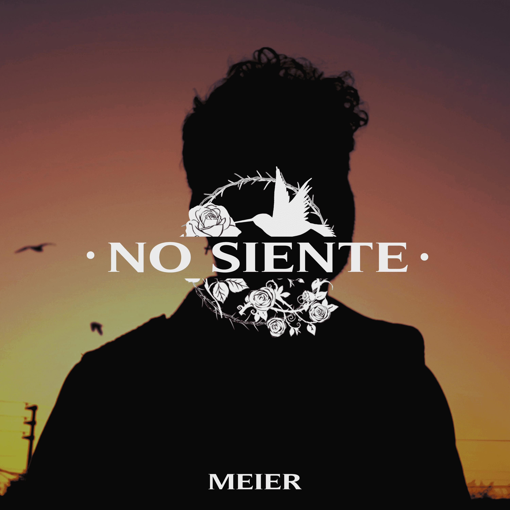
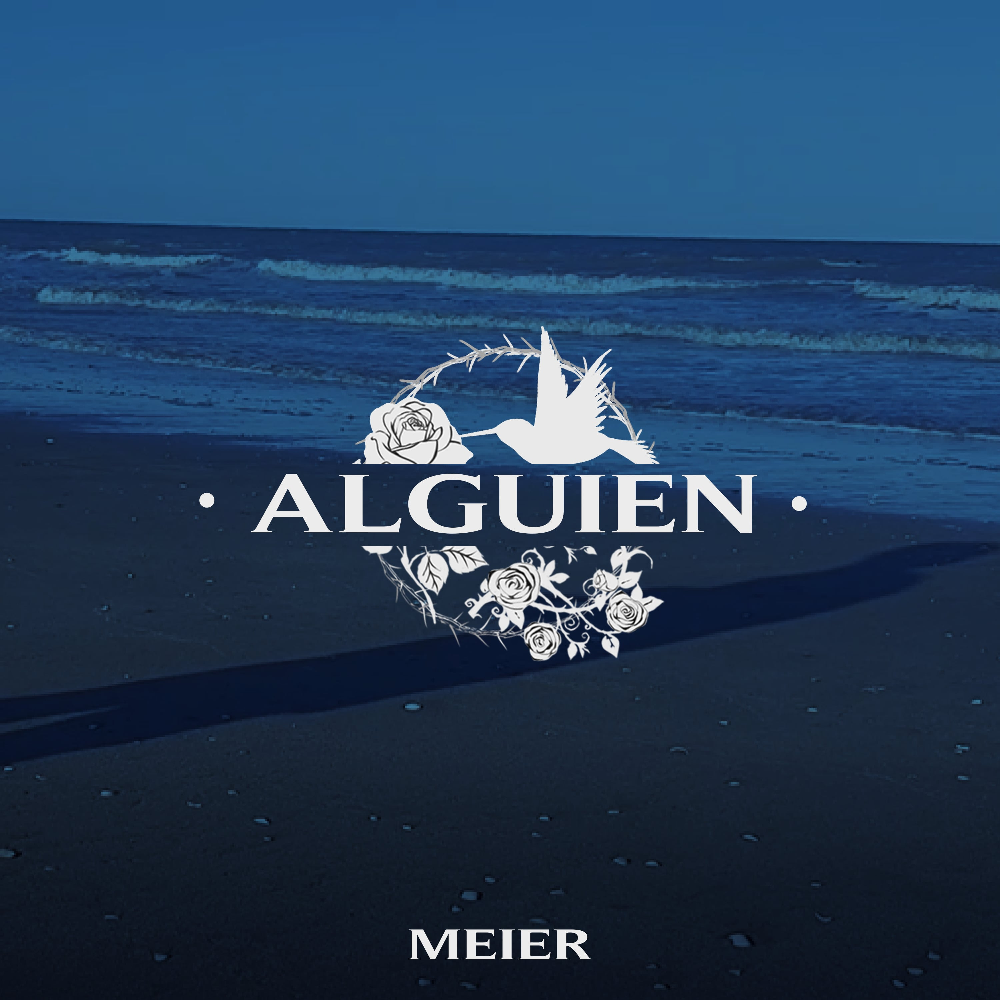

 No Siente Meier Último Single, un festival de Hip-Hop y R&B en la terraza, subiendo un poco más el nivel. Más... Ver Video
 Alguien Meier La primera canción, su primera producción y su primer salto al mundo de la música. Más... Ver Video